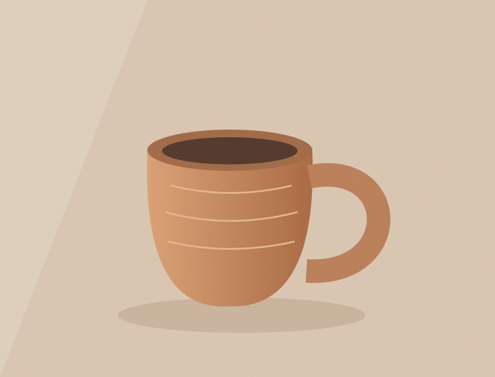
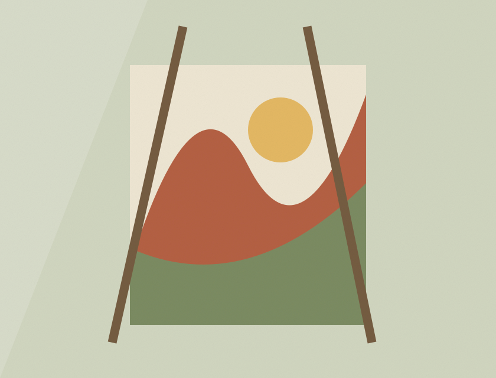

Чашка с вашим характером

О занятии
Познакомитесь с материалом, освоите базовые приёмы и создадите свою работу. Преподаватель поможет на каждом этапе.
Программа
- Знакомство и выбор идеи — 20 минут
- Демонстрация инструментов и техники — 30 минут
- Самостоятельная работа с поддержкой мастера
- Финальные штрихи, уход за изделием и чай
Готовая работа
Керамику можно забрать после обжига через 14 дней. Мы напишем, когда она будет готова.
